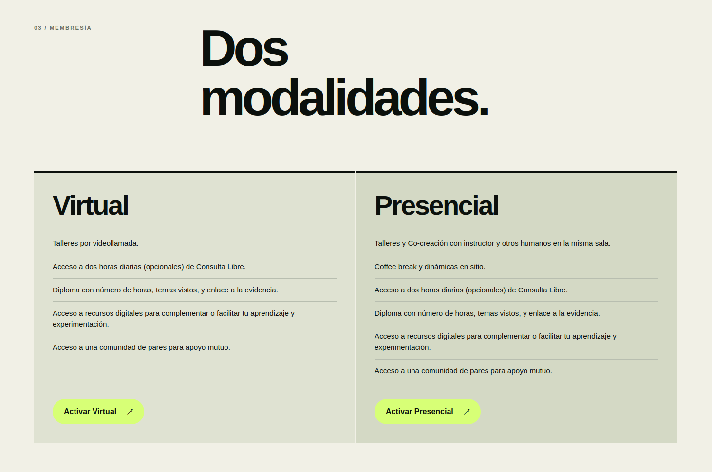

El embudo inicial
9% → 3%
IMCO confirma la caída del crecimiento anual del empleo de nivel inicial. La IA automatiza las tareas cognitivas básicas: captura de datos, borradores, depuración de código.
Programa de innovación aplicada · Xalapa + en línea
Un laboratorio andante —casa rodante con soberanía hídrica, eléctrica, alimentaria y de residuos— lleva innovación aplicada a tu comunidad estudiantil.
01 · El problema — por qué importa hoy
La IA generativa hoy se consume, no se construye.
Las buenas ideas se quedan en la libreta. Las soluciones de ciudad suelen llegar impuestas, no co-diseñadas.
La crisis hídrica, energética y de residuos es un problema de diseño, no de escasez.
02 · El efecto tijera
Mientras el crecimiento del empleo de nivel inicial cae, el desplazamiento de tareas por IA en el sector formal sube. Las líneas se cruzan entre 2023 y 2024: ese cruce es el efecto tijera.
Empleo nivel inicial: IMCO, análisis de desempeño laboral juvenil (2026). Exposición/desplazamiento: Banco de México, Tecnologías de Automatización y Empleo Bajo Riesgo: El Caso de México (2026), techo estructural 31.4% en ocupaciones formales.
03 · Cifras clave para México
9% → 3%
IMCO confirma la caída del crecimiento anual del empleo de nivel inicial. La IA automatiza las tareas cognitivas básicas: captura de datos, borradores, depuración de código.
INEGI / ENOE
Presión a la baja del empleo formal de adultos jóvenes; dificultad para absorber recién egresados en puestos corporativos de alta exposición tecnológica.
31.4%
Banxico: al ajustar por el sector informal, el riesgo real se concentra en el sector formal — 31.4% de exposición/desplazamiento de tareas.
7×
PwC, Global AI Jobs Barometer (2026): las ofertas que exigen habilidades avanzadas de IA se duplican y las vacantes júnior se «seniorizan» — 7× más probabilidad de pedir estrategia, arquitectura o liderazgo. Las empresas elevan la productividad del personal senior en lugar de abrir plazas júnior.
19%
Stanford Digital Economy Lab y ADP Research (2026), Canaries in the Coal Mine?: brecha de empleo de 19% en profesionales de 22–25 años en sectores altamente automatizados. El ajuste ocurre por congelamiento de contratación — cierre de la rampa de entrada —, no por despidos masivos.
¿De dónde saldrá la próxima generación de directores si se destruye la rampa de entrada?
04 · Deuda cognitiva
Los estudios neurocognitivos recientes miden el costo cognitivo de delegar el pensamiento completo a la IA. Dos hallazgos clave.
Hasta −55% de conectividad en quienes delegaron tareas completas al LLM.
83.3% de los participantes no pudo citar una sola frase del texto que acababa de generar.
Correlación negativa entre uso frecuente de IA y pensamiento crítico (n=666), mediada por cognitive offloading.
El efecto es más severo en jóvenes de 17–25 años, justamente la población que entra a la rampa de empleo.
Fuente: Societies 15(1), 2025.
Nota honesta: ningún estudio muestra pérdida biológica de CI; los efectos documentados son desuso funcional y automatización del criterio, no una alteración estructural de la capacidad innata.
La IA debe aumentar las capacidades humanas y del planeta, no reducirlas.
05 · La oportunidad — economía agéntica
El volumen de mercado que se abre si se aprende a construir con IA, no solo a consumirla.
McKinsey · 2026
3–5B
Comercio agéntico global de 3–5 billones USD para 2030.
Getnet
30%
Para 2030, 30% del valor del comercio digital ejecutado o influido por IA agéntica → GMV >17.5 billones USD.
Gartner
33%
Para 2028, 33% de apps empresariales incluirán IA autónoma y ≥15% de las decisiones diarias de negocio serán 100% autónomas.
BCG
−15%
Pioneros con ecosistemas multiagente reportan −15% a −20% en costos operativos.
Mercado laboral sintético: agentes como empleadores y trabajadores autónomos, con micropagos en milisegundos vía stablecoins. Observatorio de IA (2026).
El futuro del país depende de estudiantes y profesionales que usen la IA para crear riqueza y bienestar común.
06 · Laboratorio andante
Primero en el mundo en integrar soberanía hídrica, eléctrica, alimentaria y de gestión de residuos en una casa rodante.
Ecotecnias demostrables
07 · Portafolio de innovación aplicada
Agua
ProblemaEscasez y mala calidad del agua en las casas.
TecnologíaBiofiltros de aguas grises tratadas a nivel de beber, libres de químicos, bajo mantenimiento.
ResultadoAgua segura en el hogar sin red de distribución nueva.
Residuos y energía
ProblemaResiduos orgánicos y neumáticos sin destino productive.
TecnologíaBioconversión con larva de mosca soldado negra (residuo orgánico → fertilizante, harina hiperproteica y biocombustible); pirólisis de microondas (llantas y plásticos → combustibles y subproductos industriales).
ResultadoResiduo que se vuelve materia prima y combustible.
Alimentación y vivienda regenerativa
ProblemaAlimentos de distancia creciente y vivienda no regenerativa.
TecnologíaHuertos con asociación de cultivos y verticales automatizados; bioconstrucción con adobe, pieles vegetales y materiales reciclados; electrodomésticos eficientes (NOM/ISO).
ResultadoComida de cerca y casas que regresan más de lo que toman.
Ciudad inteligente y gobernanza digital
ProblemaGobiernos sin herramientas para decidir con la ciudadanía.
TecnologíaDecidim / Consul / GoVocal; agentes de IA para atención ciudadana, análisis y simulación; semáforos y cámaras con IA, gemelos digitales, drones, satélites, RV/RM; blockchain — certificación de propiedad intelectual con chips NFC, recaudación internacional con cripto; módulo de incubación/aceleración e impacto; módulo de consultoría (diagnóstico, piloto, hoja de ruta, certificación).
ResultadoDecisiones públicas co-diseñadas y trazables.
08 · Oferta educativa — el Curso de IA
Un club-programa para pasar de consumir IA a construir con ella. No es «otro curso de IA».
Historial
Zócalo de Zacatlán de las Manzanas · Parque Intermunicipal de San Andrés Cholula · UAM Cuajimalpa · Politécnica Metropolitana de Puebla · secundaria de Lancaster · agrupaciones vecinales · UNAM CU.
Incentivos
Talleres gratuitos durante la visita del bus. Talleres adicionales desde $600 MXN por sesión de 1.5 h para grupos de hasta 25 personas.
Para instituciones
Permiso de estacionamiento por 5 días, difusión interna y vinculación docente.

Cupo limitado · presencial en Xalapa + en línea
09 · Casos y evidencia
Zacatlán de las Manzanas
+500 personas, incluida la presidenta municipal y su Cabildo.
Propuestas formales a gobierno municipal (p. ej. «Zacatlán Circular»).
UP Metropolitana de Puebla
200 universitarios + 30 niños.
San Andrés Cholula
Funcionarios estatales/municipales, empresarios, activistas y ciudadanos.
Atlixco
15 medios en rueda de prensa · ~400 participantes en tres días.
UAM Cuajimalpa · IPN · UNAM CU
Sedes universitarias con la ruta activa.
10 · Instructor y trayectoria

El Mtro. Humberto Besso-Oberto Huerta es inventor, investigador, emprendedor y filántropo enfocado en impacto positivo.
La diversidad de industrias y roles le permite coordinar equipos cruzando zonas horarias y con tecnologías de frontera.
Imagen «Ex Alumno del Mes» (pendiente: la entregará el dueño del sitio).
11 · Cómo participar

12 · Preguntas frecuentes
No. El curso está diseñado para empezar sin saber programar.
Se indica en el propio curso, según la modalidad que elijas.
No: es autónomo en agua y energía. Solo se solicita estacionamiento.
Espacio abierto, para maniobrar un vehículo de 12 m.
Existe la modalidad en línea.